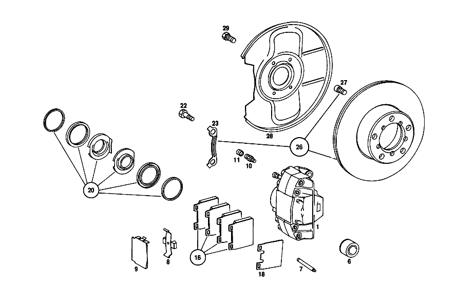

| № | Артикул | Название | Кол. | Примечание | Ограничение |
|---|---|---|---|---|---|
| 1 | A 001 421 42 98 | СКОБА ТОРМОЗН. МЕХАНИЗМА | - | ||
| 1 | A 001 421 79 98 | Тормозной суппорт | 1 | LEFT TEVES, LESS LINING | |
| 1 | A 001 421 43 98 | СКОБА ТОРМОЗН. МЕХАНИЗМА | - | ||
| 1 | A 001 421 80 98 | Тормозной суппорт | 1 | RIGHT"TEVES",LESS LINING | |
| 6 | A 000 421 43 83 | - Комплект поршней | 4 | 60 MM | |
| 7 | A 000 991 03 60 | - Фиксирующий штифт | 4 | ||
| 8 | A 000 421 10 91 | - Разжимная пружина | 2 | ||
| 9 | A 000 421 02 20 | - Щиток | 2 | ||
| 10 | A 000 420 00 55 | - КЛАПАН ВЕНТИЛЯЦИИ | - | ||
| 10 | A 000 420 17 55 | - Клапан выпуска воздуха | 2 | ||
| 11 | A 000 421 08 87 | - Защитный колпачок | - | ||
| 11 | A 000 421 71 87 | - КОЛПАЧОК | - | ||
| 11 | A 000 421 08 87 | - Защитный колпачок | 2 | ||
| 18 | A 000 421 01 96 | Демпфирование | 4 | [063] ТОЛЬКО ПРИ ПИСКЕ ТОРМОЗОВ | |
| 20 | A 000 586 74 42 | ремкомплект | 2 | СКОБА ТОРМОЗН. МЕХАНИЗМА TEVES | |
| 22 | A 115 421 04 71 | болт | 4 | ||
| 23 | A 115 994 06 32 | ПРЕДОХРАНИТЕЛЬ | - | ||
| 23 | A 115 994 03 32 | ПРЕДОХРАНИТЕЛЬ | - | ||
| 23 | A 115 994 07 32 | Стопорная шайба | 2 | ||
| 26 | A 114 421 00 12 | ТОРМОЗНОЙ ДИСК | - | ||
| 26 | A 115 421 14 12 | ТОРМОЗНОЙ ДИСК | - | ||
| 26 | A 123 420 00 72 | ТОРМОЗНОЙ ДИСК | - | ||
| 26 | A 123 421 00 12 | Тормозной диск | 2 | [402] БОЛЬШЕ НЕ ПОСТАВЛЯЕТСЯ | |
| 27 | A 000 990 37 12 | БОЛТ | - | ||
| 27 | A 000 990 72 12 | Винт с цил.гол./6-гр. | 10 | ||
| 28 | A 115 421 27 20 | ЗАЩИТНАЯ ПАНЕЛЬ | - | ||
| 28 | A 114 421 00 20 | Щиток | 2 | ||
| 29 | N 914004 006002 | Винт с неспадающей шайбой | 6 | ||
| 34 | A 000 423 63 98 | СКОБА ТОРМОЗН. МЕХАНИЗМА | - | ||
| 34 | A 000 423 72 98 | СКОБА ТОРМОЗН. МЕХАНИЗМА | - | ||
| 34 | A 123 420 05 83 | Тормозной суппорт | 1 | LEFT;TEVES;LESS LINING [045] FROM CHASSIS: WITH REAR AXLE RATIO 1:3,92 010 120833, EXCEPT FOR: 125938-126140,126167-126388 015 159568, EXCEPT FOR: 169906-170508,170562-170632 110 325005, EXCEPT FOR: 343197-344125,344244-344375 115 168361, EXCEPT FOR: 180883-181472,181544-181643 [046] FROM CHASSIS: WITH REAR AXLE RATIO 1:4,08 000,002,010 121920 015 162285 100,102,103,110,112 329665 115 171450 [047] FROM CHASSIS: WITH REAR AXLE RATIO 1:4,36 100,103,110,112 330089 115 171760 | |
| 34 | A 000 423 64 98 | СКОБА ТОРМОЗН. МЕХАНИЗМА | - | ||
| 34 | A 000 423 73 98 | СКОБА ТОРМОЗН. МЕХАНИЗМА | - | ||
| 34 | A 123 420 06 83 | Тормозной суппорт | 1 | RIGHT,TEVES,LESS LINING [045] FROM CHASSIS: WITH REAR AXLE RATIO 1:3,92 010 120833, EXCEPT FOR: 125938-126140,126167-126388 015 159568, EXCEPT FOR: 169906-170508,170562-170632 110 325005, EXCEPT FOR: 343197-344125,344244-344375 115 168361, EXCEPT FOR: 180883-181472,181544-181643 [046] FROM CHASSIS: WITH REAR AXLE RATIO 1:4,08 000,002,010 121920 015 162285 100,102,103,110,112 329665 115 171450 [047] FROM CHASSIS: WITH REAR AXLE RATIO 1:4,36 100,103,110,112 330089 115 171760 | |
| 37 | A 000 423 32 83 | - ПОРШЕНЬ | - | [013] ИСПОЛЬЗОВАТЬ СТАРЫЙ НОМЕР ДЕТАЛИ [052] UP TO CHASSIS: 005,017 016535 015 223409 105,107,108,117,119 033807 110 421313 114 000010 115 228811 | |
| 37 | A 000 423 36 83 | - Поршень | 4 | TEVES | |
| 38 | A 000 991 03 60 | - Фиксирующий штифт | 4 | TEVES | |
| 39 | A 000 421 03 91 | - ПРУЖИНА | - | [013] ИСПОЛЬЗОВАТЬ СТАРЫЙ НОМЕР ДЕТАЛИ [052] UP TO CHASSIS: 005,017 016535 015 223409 105,107,108,117,119 033807 110 421313 114 000010 115 228811 | |
| 39 | A 000 421 17 91 | - Разжимная пружина | 2 | TEVES | |
| 40 | A 000 420 19 55 | - Клапан выпуска воздуха | 2 | MARCA TEVES,7\-MM THREAD | |
| 40 | A 000 420 24 55 | - КЛАПАН ВЕНТИЛЯЦИИ | - | ||
| 40 | A 000 420 46 55 | - Клапан выпуска воздуха | 2 | TEVES,8\-MM THREAD | |
| 41 | A 000 421 08 87 | - Защитный колпачок | - | ||
| 41 | A 000 421 71 87 | - КОЛПАЧОК | - | ||
| 41 | A 000 421 08 87 | - Защитный колпачок | 2 | ||
| 42 | A 000 586 39 43 | РЕМКОМПЛЕКТ | - | ||
| 42 | A 001 586 73 43 | ремкомплект | 2 | СКОБА ТОРМОЗН. МЕХАНИЗМА TEVES | |
| 48 | A 000 586 76 42 | РЕМКОМПЛЕКТ | - | ||
| 48 | A 000 420 76 20 | Тормозная колодка | - | ||
| 48 | A 001 420 06 20 | К-т тормозных колодок | 1 | К\-Т ДЕТАЛЕЙ | |
| 48C | A 000 423 00 61 | Демпфирование | 4 | [063] ТОЛЬКО ПРИ ПИСКЕ ТОРМОЗОВ | |
| 49 | A 123 423 00 71 | болт | 4 | ||
| 50 | A 115 423 02 73 | Стопорная шайба | 2 | [062] UP TO CHASSIS: 005,017 074454 015 300134 105,107,108,117,119 115267 110 462064 114 042000 115 330669 | |
| 53 | A 115 423 02 12 | ТОРМОЗНОЙ ДИСК | - | ||
| 53 | A 115 420 00 72 | ТОРМОЗНОЙ ДИСК | - | ||
| 53 | A 115 423 04 12 | ТОРМОЗНОЙ ДИСК | - | ||
| 53 | A 126 423 00 12 | Тормозной диск | 2 | ||
| 54 | A 115 420 27 44 | ЗАЩИТНАЯ ПАНЕЛЬ | - | ||
| 54 | A 115 420 35 44 | Щиток | 1 | тормоз заднего колеса,LEFT [021] FROM CHASSIS: 000,002,010 067614 015 075301 100,102,103,110,112 170638 115 082050 005,017,105,107,108,117,119 000001 | |
| 54 | A 115 420 28 44 | ЗАЩИТНАЯ ПАНЕЛЬ | - | ||
| 54 | A 115 420 36 44 | Щиток | 1 | тормоз заднего колеса,RIGHT [021] FROM CHASSIS: 000,002,010 067614 015 075301 100,102,103,110,112 170638 115 082050 005,017,105,107,108,117,119 000001 | |
| 59 | A 115 427 03 96 | Манжета | 2 | COVER PLATE TO TRANSVERSE CONTROL ARM [021] FROM CHASSIS: 000,002,010 067614 015 075301 100,102,103,110,112 170638 115 082050 005,017,105,107,108,117,119 000001 | |
| 60 | A 115 423 01 06 | КРОНШТЕЙН | - | [013] ИСПОЛЬЗОВАТЬ СТАРЫЙ НОМЕР ДЕТАЛИ [059] UP TO CHASSIS: 005,017 070407 015 293094 105,107,108,117,119 111268 110 459772 114 037214 115 323450 | |
| 60 | A 116 423 01 06 | КРОНШТЕЙН | - | ||
| 60 | A 123 423 00 06 | Кронштейн торм. механизма | 2 | ТОРМОЗН. КОЛОДКА | |
| 60 | A 123 423 01 06 | КРОНШТЕЙН | 2 | ТОРМОЗН. КОЛОДКА | |
| 60 | A 123 423 02 06 | КРОНШТЕЙН | 2 | ТОРМОЗН. КОЛОДКА | |
| 61 | N 914004 006002 | Винт с неспадающей шайбой | 4 | ||
| 62 | A 123 990 03 12 | болт | 4 | BRAKE SHOE SUPPORT TO TRANSVERSE CONTROL ARM | |
| 62E | A 123 420 01 20 | ТОРМОЗН. КОЛОДКА | - | ||
| 62E | A 126 420 01 20 | Тормозная колодка | 1 | ОБЪЁМ ПОСТАВКИ | |
| 63 | A 108 420 01 20 | - ТОРМОЗН. КОЛОДКА | - | [417] БОЛЬШЕ НЕ ПОСТАВЛЯЕТСЯ, ЗАКАЗЫВАТЬ КОМПЛЕКТ ПОСТАВКИ | |
| 64 | A 108 423 00 92 | - пружина | 4 | ||
| 64E | A 108 423 01 92 | - пружина | - | ||
| 64E | A 901 993 13 10 | - пружина | 2 | ||
| 64K | A 108 423 06 92 | - пружина | 2 | ||
| 65 | A 123 420 00 73 | Болт, особая форма | 2 | ||
| 66 | A 116 423 00 50 | втулка | 2 | ||
| 70 | A 114 586 01 42 | РЕМКОМПЛЕКТ | - | ЗАМОК НАТЯЖНОЙ [412] БОЛЬШЕ НЕ ПОСТАВЛЯЕТСЯ, ЗАКАЗЫВАТЬ ОТДЕЛЬНЫЕ ДЕТАЛИ [054] FROM CHASSIS: 005,017 041251 015 255761 105,107,108,117,119 073305 110 442021 114 009172 115 270763 | |
| 81 | A 001 430 66 30 | Аппарат тормозной системы | 1 | TEVES | |
| 83 | A 000 431 71 87 | - Защитный колпачок | 1 | TEVES [060] FROM CHASSIS: 005,017, 062787 015 284268 105,107,117 102726 108,119 102530 110 455273 114 029144 115 311171 | |
| 85 | A 000 435 07 12 | - КОЛЬЦО ДЕМФИРУЮЩЕЕ | - | [415] ПРИМЕЧ. ПО ЗАМЕНЕ ПРИМЕНИМО ТОЛЬКО ДЛЯ СТОЯЩИХ РЯДОМ ПОЗИЦИЙ | |
| 85B | A 002 586 12 43 | ремкомплект | 1 | УСИЛИТЕЛЬ ТОРМ. ПРИВОДА TEVES [060] FROM CHASSIS: 005,017, 062787 015 284268 105,107,117 102726 108,119 102530 110 455273 114 029144 115 311171 | |
| 86 | A 002 430 28 01 | Главный цилиндр | 1 | TEVES | |
| 87 | A 004 997 32 45 | - Уплотнительное кольцо | 1 | ||
| 89 | A 001 586 93 43 | ремкомплект | 1 | ГЛАВН. ТОРМОЗН. ЦИЛ. TEVES | |
| 96 | A 001 431 42 02 | Бак | 1 | TEVES, THREE\-CHAMBER Рулевое управление: Вправо | |
| 96 | A 001 431 42 02 | Бак | 1 | TEVES, THREE\-CHAMBER Рулевое управление: Влево [050] FROM CHASSIS: 005,017 009972 015 215194 105,107,108,117,119 017586 110 413857 115 218100 | |
| 97 | A 000 431 09 35 | - СОЕДИНИТЕЛЬ | 2 | ||
| 98 | A 000 431 43 33 | - ПРОБКА | - | ||
| 98 | A 000 431 51 33 | - ПРОБКА | - | ||
| 98 | A 000 431 54 33 | - Запорная крышка | 1 | TEVES [050] FROM CHASSIS: 005,017 009972 015 215194 105,107,108,117,119 017586 110 413857 115 218100 | |
| 98C | A 000 997 29 40 | - Уплотнительное кольцо | 1 | ||
| 99 | A 000 431 16 33 | - Колпачок | 2 | TEVES [402] БОЛЬШЕ НЕ ПОСТАВЛЯЕТСЯ | |
| 100 | A 001 542 63 17 | - Ремк-т датчика уровня | 1 | TEVES, FRONT SUPPLY CHAMBER | |
| 100 | A 001 542 63 17 | - Ремк-т датчика уровня | 1 | THREE\-CHAMBER RESERVOIR,REAR [050] FROM CHASSIS: 005,017 009972 015 215194 105,107,108,117,119 017586 110 413857 115 218100 | |
| 102 | A 000 431 75 60 | - Уплотнение | 2 | ||
| 103 | A 000 431 82 60 | - уплотнение | 2 | ||
| 110 | A 000 431 37 34 | - СЕТКА | - | ||
| 110 | A 000 431 43 34 | - Сетка | 1 | TEVES | |
| 110 | A 000 431 42 34 | - СЕТКА | 1 | ||
| 113 | A 115 431 01 80 | уплотнение | 1 | ||
| 114 | N 000137 008204 | Пружинная шайба | - | ||
| 114 | N 000137 008212 | Пружинная шайба | 4 | ||
| 115 | N 000934 008013 | Гайка | 4 | ||
| 117 | N 000933 008153 | Винт | - | M8X25\-8.8 | |
| 117 | N 304017 008034 | Винт с 6-гранной головкой | 1 | M8X25 [026] FROM CHASSIS: 000,002,010 068872 015 077035 100,102,103,110,112 174249 115 084045 005,017,105,107,108,117,119 000001 | |
| 118 | A 115 291 03 50 | втулка | 1 | [026] FROM CHASSIS: 000,002,010 068872 015 077035 100,102,103,110,112 174249 115 084045 005,017,105,107,108,117,119 000001 | |
| 119 | N 000127 008203 | Пружинное кольцо | 1 | ||
| 120 | N 000439 008203 | Гайка | - | ||
| 120 | N 304035 008002 | Шестигранная гайка | 1 | ||
| 141 | A 115 420 00 28 | ПРОВОД | - | Рулевое управление: Влево | |
| 141 | A 123 420 54 28 | Провод | 1 | FROM MASTER CYLINDER TO FRONT LEFT BRAKE HOSE; 4.75X0.7X300 MM Рулевое управление: Влево [409] ПРИ МОНТАЖЕ ПОДОГНАТЬ ПО МЕСТУ | |
| 142 | A 115 420 01 28 | ПРОВОД | - | Рулевое управление: Влево | |
| 142 | A 123 420 68 28 | Провод | 1 | FROM MASTER CYLINDER TO FRONT RIGHT BRAKE HOSE; 4.75 X 0.7 X 1290 MM Рулевое управление: Влево [409] ПРИ МОНТАЖЕ ПОДОГНАТЬ ПО МЕСТУ | |
| 148 | A 001 997 14 81 | резиновая втулка | 2 | ||
| 150 | A 120 420 02 27 | Т-образный винт | 1 | Рулевое управление: Вправо | |
| 151 | A 000 987 38 41 | КОЛЬЦО РЕЗИНОВОЕ | 1 | ||
| 154 | A 000 428 48 24 | РАСПРЕДЕЛИТЕЛЬ | - | ||
| 154 | A 000 428 42 24 | Распределитель | 1 | [024] FROM CHASSIS: 000,002,010 064095 015 070416 100,102,110 161008, ALSO INSTALLED ON: 160846 103,112 161678, ALSO INSTALLED ON: 161628 115 076569 | |
| 155 | A 094 990 68 10 | Пружинное кольцо | 1 | ||
| 156 | N 000934 006007 | Гайка | 1 | ||
| 157 | N 007976 006303 | Шуруп | 1 | [024] FROM CHASSIS: 000,002,010 064095 015 070416 100,102,110 161008, ALSO INSTALLED ON: 160846 103,112 161678, ALSO INSTALLED ON: 161628 115 076569 | |
| 160 | A 115 428 00 41 | хомут | 1 | [024] FROM CHASSIS: 000,002,010 064095 015 070416 100,102,110 161008, ALSO INSTALLED ON: 160846 103,112 161678, ALSO INSTALLED ON: 161628 115 076569 | |
| 161 | N 007976 006203 | Шуруп | 1 | B6,3X13 [024] FROM CHASSIS: 000,002,010 064095 015 070416 100,102,110 161008, ALSO INSTALLED ON: 160846 103,112 161678, ALSO INSTALLED ON: 161628 115 076569 | |
| 162 | A 115 420 28 28 | ПРОВОД | - | ||
| 162 | A 123 420 53 28 | Провод | 1 | ОТ РАСПРЕДЕЛИТ.К ТОРМОЗ.ШЛАНГУ СЗАДИ СЛЕВА; 4.75X0.7X260 MM [409] ПРИ МОНТАЖЕ ПОДОГНАТЬ ПО МЕСТУ [033] FROM CHASSIS: 000,002,010 127883 015 173553 100,102,103,110,112 349725 115 185550 005,017,105,107,108,117,119 000001 | |
| 163 | A 115 420 29 28 | ПРОВОД | - | ||
| 163 | A 123 420 64 28 | Провод | 1 | ОТ РАСПРЕДЕЛИТ.К ТОРМОЗ.ШЛАНГУ СЗАДИ СПРАВА [409] ПРИ МОНТАЖЕ ПОДОГНАТЬ ПО МЕСТУ [033] FROM CHASSIS: 000,002,010 127883 015 173553 100,102,103,110,112 349725 115 185550 005,017,105,107,108,117,119 000001 | |
| 165 | A 110 428 01 81 | ШЛАНГОВ. ЭЛЕМЕНТ | - | ||
| 165 | A 126 328 01 81 | Резиновая опора | NB | REAR BRAKE LINE TO FRAME | |
| 174 | A 108 995 05 20 | хомут | NB | ТОРМОЗН. ТРУБОПРОВОД НА ПЕРЕГОРОДКЕ | |
| 175 | A 115 995 01 01 | ХОМУТ | 2 | ТОРМОЗН. ТРУБОПРОВОД НА ПЕРЕГОРОДКЕ Рулевое управление: Влево | |
| 176 | A 111 476 00 81 | Резиновая вставка | 4 | ТОРМОЗН. ТРУБОПРОВОД НА ПЕРЕГОРОДКЕ Рулевое управление: Вправо | |
| 177 | A 108 546 02 53 | РАСПОРН. ТРУБКА | 1 | ТОРМОЗН. ТРУБОПРОВОД НА ПЕРЕГОРОДКЕ [402] БОЛЬШЕ НЕ ПОСТАВЛЯЕТСЯ | |
| 177 | A 108 546 02 53 | РАСПОРН. ТРУБКА | 2 | Рулевое управление: Вправо [402] БОЛЬШЕ НЕ ПОСТАВЛЯЕТСЯ | |
| 180 | A 123 428 05 35 | Тормозной шланг | 2 | СПЕРЕДИ | |
| 190 | A 123 428 01 35 | Тормозной шланг | - | ||
| 190 | A 126 428 03 35 | Тормозной шланг | 2 | [045] FROM CHASSIS: WITH REAR AXLE RATIO 1:3,92 010 120833, EXCEPT FOR: 125938-126140,126167-126388 015 159568, EXCEPT FOR: 169906-170508,170562-170632 110 325005, EXCEPT FOR: 343197-344125,344244-344375 115 168361, EXCEPT FOR: 180883-181472,181544-181643 [046] FROM CHASSIS: WITH REAR AXLE RATIO 1:4,08 000,002,010 121920 015 162285 100,102,103,110,112 329665 115 171450 [047] FROM CHASSIS: WITH REAR AXLE RATIO 1:4,36 100,103,110,112 330089 115 171760 | |
| 196 | A 000 428 06 73 | Удерживающая пружина | 4 | ||
| 202 | A 116 420 03 84 | Стояночный тормоз | 1 | Рулевое управление: Влево [028] FROM CHASSIS: 000,002,010 113545 015 147318 100,102,103,110,112 302153 115 154725 005,017,105,107,108,117,119 000001 | |
| 203 | A 115 427 07 86 | - Упорное кольцо | 1 | Рулевое управление: Влево | |
| 204 | A 107 427 00 82 | - Чехол | 1 | Рулевое управление: Влево [028] FROM CHASSIS: 000,002,010 113545 015 147318 100,102,103,110,112 302153 115 154725 005,017,105,107,108,117,119 000001 | |
| 210 | A 115 993 26 10 | - ПРУЖИНА | - | Рулевое управление: Влево | |
| 210 | A 116 430 00 93 | - пружина | 1 | Рулевое управление: Влево | |
| 211 | A 115 427 07 31 | ТЯГА | 1 | Рулевое управление: Влево [402] БОЛЬШЕ НЕ ПОСТАВЛЯЕТСЯ [028] FROM CHASSIS: 000,002,010 113545 015 147318 100,102,103,110,112 302153 115 154725 005,017,105,107,108,117,119 000001 | |
| 212 | A 116 427 00 12 | Направл. втулка | 1 | Рулевое управление: Влево [030] FROM CHASSIS: 000,002,010 106042 015 135067 100,102,103,110,112 279860 115 141776 005,017,105,107,108,117,119 000001 | |
| 220 | A 115 427 08 86 | Упорный буфер | 1 | Рулевое управление: Влево | |
| 222 | A 115 540 00 28 | Кнопка | 1 | Рулевое управление: Влево [028] FROM CHASSIS: 000,002,010 113545 015 147318 100,102,103,110,112 302153 115 154725 005,017,105,107,108,117,119 000001 | |
| 223 | N 000125 006421 | Шайба | 2 | Рулевое управление: Влево | |
| 223 | N 000125 006449 | Шайба | 2 | Рулевое управление: Влево | |
| 224 | N 000137 006204 | Пружинная шайба | 1 | Рулевое управление: Влево | |
| 227 | A 116 427 00 73 | ПРЕДОХРАНИТЕЛЬ | 1 | Рулевое управление: Влево [030] FROM CHASSIS: 000,002,010 106042 015 135067 100,102,103,110,112 279860 115 141776 005,017,105,107,108,117,119 000001 | |
| 228 | N 000934 006013 | Гайка | - | Рулевое управление: Влево | |
| 228 | N 304032 006008 | Шестигранная гайка | 2 | Рулевое управление: Влево | |
| 229 | A 094 990 68 10 | Пружинное кольцо | 2 | Рулевое управление: Влево | |
| 230 | N 000931 006084 | Винт | - | Рулевое управление: Влево | |
| 230 | N 304017 006027 | Винт с 6-гранной головкой | 1 | M6X45 Рулевое управление: Влево | |
| 231 | N 009021 007200 | Шайба | 1 | Рулевое управление: Влево | |
| 232 | A 094 990 68 10 | Пружинное кольцо | 1 | Рулевое управление: Влево | |
| 233 | A 115 427 00 79 | Уплотнительная прокладка | 1 | Рулевое управление: Влево | |
| 240 | A 115 420 07 68 | КРОНШТЕЙН | 1 | Рулевое управление: Вправо [402] БОЛЬШЕ НЕ ПОСТАВЛЯЕТСЯ | |
| 241 | A 115 420 12 12 | РЫЧАГ ТОРМОЗА | 1 | Рулевое управление: Вправо [402] БОЛЬШЕ НЕ ПОСТАВЛЯЕТСЯ | |
| 242 | A 110 427 00 50 | - ВТУЛКА | 1 | Рулевое управление: Вправо | |
| 243 | A 115 420 03 82 | БОЛТ | 1 | Рулевое управление: Вправо [402] БОЛЬШЕ НЕ ПОСТАВЛЯЕТСЯ | |
| 244 | N 000933 008131 | Винт | - | Рулевое управление: Вправо | |
| 244 | N 304017 008016 | Винт с 6-гранной головкой | 1 | M8X16 Рулевое управление: Вправо | |
| 245 | N 912004 008102 | Пружинное кольцо | 1 | Рулевое управление: Вправо | |
| 246 | A 115 427 18 89 | Язычок | 1 | Рулевое управление: Вправо | |
| 247 | N 001434 008070 | Палец | 1 | Рулевое управление: Вправо [402] БОЛЬШЕ НЕ ПОСТАВЛЯЕТСЯ | |
| 250 | A 115 420 10 88 | ТЯГА ЗАЩЕЛКИ | 1 | Рулевое управление: Вправо [402] БОЛЬШЕ НЕ ПОСТАВЛЯЕТСЯ | |
| 251 | N 001434 008070 | Палец | 1 | Рулевое управление: Вправо [402] БОЛЬШЕ НЕ ПОСТАВЛЯЕТСЯ | |
| 252 | A 115 427 06 86 | Упорное кольцо | 1 | Рулевое управление: Вправо | |
| 253 | A 123 420 01 95 | РУЧКА | - | Рулевое управление: Вправо | |
| 253 | A 123 420 03 95 | Ручка | 1 | Рулевое управление: Вправо | |
| 254 | A 115 420 07 86 | ДЕРЖАТЕЛЬ | 1 | Рулевое управление: Вправо | |
| 260 | A 115 427 06 40 | болт | 1 | Рулевое управление: Вправо | |
| 261 | N 900055 016001 | Пружинная шайба | 1 | Рулевое управление: Вправо | |
| 265 | N 000931 006084 | Винт | - | Рулевое управление: Вправо | |
| 265 | N 304017 006027 | Винт с 6-гранной головкой | 1 | M6X45 Рулевое управление: Вправо | |
| 266 | N 009021 007200 | Шайба | 1 | Рулевое управление: Вправо | |
| 267 | A 094 990 68 10 | Пружинное кольцо | 1 | Рулевое управление: Вправо | |
| 270 | N 000934 006013 | Гайка | - | Рулевое управление: Вправо | |
| 270 | N 304032 006008 | Шестигранная гайка | 3 | Рулевое управление: Вправо | |
| 271 | A 094 990 68 10 | Пружинное кольцо | 3 | Рулевое управление: Вправо | |
| 280 | A 115 990 45 40 | ШАЙБА | - | Рулевое управление: Вправо | |
| 280 | A 631 267 02 76 | ШАЙБА | 1 | Рулевое управление: Вправо | |
| 280 | A 004 990 25 82 | Диск | 1 | Рулевое управление: Вправо | |
| 281 | N 912004 008102 | Пружинное кольцо | 1 | Рулевое управление: Вправо | |
| 282 | N 000933 008131 | Винт | - | Рулевое управление: Вправо | |
| 282 | N 304017 008016 | Винт с 6-гранной головкой | 1 | M8X16 Рулевое управление: Вправо | |
| 286 | N 000912 005002 | Винт | 1 | Рулевое управление: Вправо | |
| 287 | N 007980 005001 | Пружинное кольцо | 1 | Рулевое управление: Вправо | |
| 300 | A 115 420 16 85 | Тормозной трос | 1 | СПЕРЕДИ Рулевое управление: Влево | |
| 301 | A 115 420 19 85 | ТРОС. ПРИВОД СТОЯН. ТОРМ. | 1 | Рулевое управление: Вправо | |
| 305 | A 116 427 00 96 | Манжета | 1 | ||
| 306 | A 115 427 00 95 | Защитный шланг | 2 | Рулевое управление: Влево | |
| 306 | A 115 427 00 95 | Защитный шланг | 1 | Рулевое управление: Вправо | |
| 307 | A 115 993 03 25 | пружина | 1 | ||
| 310 | N 073379 006101 | Шланг | 1 | [404] ЗАКАЗЫВАТЬ ПОГОННЫМИ МЕТРАМИ | |
| 311 | A 115 995 02 10 | хомут | 1 | ||
| 312 | A 120 420 02 27 | Т-образный винт | 2 | ||
| 313 | A 000 987 38 41 | КОЛЬЦО РЕЗИНОВОЕ | 2 | ||
| 314 | A 094 990 68 10 | Пружинное кольцо | 2 | ||
| 315 | N 000934 006007 | Гайка | 2 | ||
| 318 | A 315 995 50 10 | хомут | 1 | Рулевое управление: Вправо | |
| 319 | A 120 420 02 27 | Т-образный винт | 2 | Рулевое управление: Вправо | |
| 320 | A 094 990 68 10 | Пружинное кольцо | 2 | Рулевое управление: Вправо | |
| 321 | N 000934 006013 | Гайка | - | Рулевое управление: Вправо | |
| 321 | N 304032 006008 | Шестигранная гайка | 2 | Рулевое управление: Вправо | |
| 330 | A 115 420 12 42 | Рычаг торм.механизма | 1 | ||
| 331 | A 115 993 03 30 | - пружина | 1 | ||
| 332 | A 115 420 10 89 | СЕРЬГА | 1 | ||
| 335 | A 115 427 06 71 | - болт | 1 | ||
| 336 | A 115 427 09 74 | Палец | 1 | ||
| 339 | A 115 993 27 10 | пружина | 1 | ||
| 350 | A 115 420 27 85 | Тормозной трос | 2 | [054] FROM CHASSIS: 005,017 041251 015 255761 105,107,108,117,119 073305 110 442021 114 009172 115 270763 | |
| 351 | N 070614 010010 | Винт | - | ||
| 351 | N 000933 010162 | Винт | 2 | ||
| 352 | N 000137 010205 | Пружинная шайба | 2 | ||
| 353 | A 115 997 06 81 | втулка | 2 | 23 MM | |
| A 000 586 75 42 | РЕМКОМПЛЕКТ | - | |||
| A 001 586 18 42 | РЕМКОМПЛЕКТ | - | |||
| A 000 420 68 20 | К-т тормозных колодок | - | |||
| A 000 420 64 20 | К-т тормозных колодок | - | |||
| A 001 420 78 20 | К-т тормозных колодок | 1 | К\-Т ДЕТАЛЕЙ | ||
| A 001 586 32 42 | РЕМКОМПЛЕКТ | - | |||
| A 000 420 65 20 | TS Тормозная колодка | - | |||
| A 000 420 63 20 | К-т тормозных колодок | - | |||
| A 001 420 78 20 | К-т тормозных колодок | 1 | К\-Т ДЕТАЛЕЙ | ||
| A 000 423 70 98 | СКОБА ТОРМОЗН. МЕХАНИЗМА | - | |||
| A 123 420 07 83 | СКОБА ТОРМОЗН. МЕХАНИЗМА | - | |||
| A 126 420 14 83 | СКОБА ТОРМОЗН. МЕХАНИЗМА | 1 | LEFT;BENDIX;LESS LINING [045] FROM CHASSIS: WITH REAR AXLE RATIO 1:3,92 010 120833, EXCEPT FOR: 125938-126140,126167-126388 015 159568, EXCEPT FOR: 169906-170508,170562-170632 110 325005, EXCEPT FOR: 343197-344125,344244-344375 115 168361, EXCEPT FOR: 180883-181472,181544-181643 [046] FROM CHASSIS: WITH REAR AXLE RATIO 1:4,08 000,002,010 121920 015 162285 100,102,103,110,112 329665 115 171450 [047] FROM CHASSIS: WITH REAR AXLE RATIO 1:4,36 100,103,110,112 330089 115 171760 | ||
| A 000 423 71 98 | СКОБА ТОРМОЗН. МЕХАНИЗМА | - | |||
| A 123 420 08 83 | СКОБА ТОРМОЗН. МЕХАНИЗМА | - | |||
| A 126 420 15 83 | СКОБА ТОРМОЗН. МЕХАНИЗМА | 1 | RIGHT;BENDIX;LESS LINING [045] FROM CHASSIS: WITH REAR AXLE RATIO 1:3,92 010 120833, EXCEPT FOR: 125938-126140,126167-126388 015 159568, EXCEPT FOR: 169906-170508,170562-170632 110 325005, EXCEPT FOR: 343197-344125,344244-344375 115 168361, EXCEPT FOR: 180883-181472,181544-181643 [046] FROM CHASSIS: WITH REAR AXLE RATIO 1:4,08 000,002,010 121920 015 162285 100,102,103,110,112 329665 115 171450 [047] FROM CHASSIS: WITH REAR AXLE RATIO 1:4,36 100,103,110,112 330089 115 171760 | ||
| A 000 423 35 83 | - Поршень | 4 | BENDIX | ||
| A 000 421 13 91 | - Разжимная пружина | 4 | BENDIX | ||
| A 000 991 19 60 | - ШТИФТ | - | |||
| A 000 991 26 60 | - Фиксирующий штифт | 4 | BENDIX | ||
| A 000 421 02 73 | - ПРЕДОХРАНИТЕЛЬ | - | |||
| A 000 421 05 73 | - предохранитель | 4 | BENDIX,TO 000 991 19 60 | ||
| A 000 421 05 73 | - предохранитель | 4 | BENDIX,TO 000 991 26 60 | ||
| A 001 586 01 42 | РЕМКОМПЛЕКТ | 2 | СКОБА ТОРМОЗН. МЕХАНИЗМА BENDIX | ||
| N 000961 012022 | Винт | - | [415] ПРИМЕЧ. ПО ЗАМЕНЕ ПРИМЕНИМО ТОЛЬКО ДЛЯ СТОЯЩИХ РЯДОМ ПОЗИЦИЙ | ||
| A 115 994 05 32 | ПРЕДОХРАНИТЕЛЬ | - | |||
| A 108 994 00 16 | ПРЕДОХРАНИТЕЛЬ | - | |||
| A 115 994 05 32 | ПРЕДОХРАНИТЕЛЬ | - | |||
| A 115 423 32 20 | Щиток | 2 | [022] FOR SUBSEQUENT INSTALLATION IN CASE OF BAD ROAD CONDITIONS ONLY FOR USE WITH 115 420 35 44 AND 115 420 36 44 COVER PLATES | ||
| N 007981 004233 | Шуруп | - | |||
| N 000000 000460 | Шуруп | 4 | 4.8X13 [022] FOR SUBSEQUENT INSTALLATION IN CASE OF BAD ROAD CONDITIONS ONLY FOR USE WITH 115 420 35 44 AND 115 420 36 44 COVER PLATES | ||
| A 115 427 02 96 | МАНЖЕТА | - | |||
| A 115 990 03 12 | БОЛТ | - | |||
| A 115 990 09 12 | БОЛТ | - | |||
| A 116 420 00 20 | - ТОРМОЗН. КОЛОДКА | - | [402] БОЛЬШЕ НЕ ПОСТАВЛЯЕТСЯ [417] БОЛЬШЕ НЕ ПОСТАВЛЯЕТСЯ, ЗАКАЗЫВАТЬ КОМПЛЕКТ ПОСТАВКИ | ||
| A 108 420 02 73 | БОЛТ | - | |||
| A 108 423 00 50 | ВТУЛКА | - | |||
| A 114 586 00 42 | РЕМКОМПЛЕКТ | - | [053] UP TO CHASSIS: 005,017, 041250 015 255760 105,107,108,117,119 073304 110 442020 114 009171 115 270762 | ||
| A 115 420 11 89 | Разжимной механ. тормоза | 2 | |||
| A 108 427 00 74 | Цилиндрический шрифт | 2 | SEE FIG. NO.64E SEE FIG. NO.64K | ||
| A 000 430 92 30 | УСИЛИТЕЛЬ ТОРМ. ПРИВОДА | - | [013] ИСПОЛЬЗОВАТЬ СТАРЫЙ НОМЕР ДЕТАЛИ [056] UP TO CHASSIS: 005,017 062786 015 284267 105,107,117,102725 108,119, 102529 110 455272 114 029143 115 311170 | ||
| A 001 430 36 30 | УСИЛИТЕЛЬ ТОРМ. ПРИВОДА | 1 | BENDIX | ||
| A 000 431 29 87 | - КОЛПАЧОК | 1 | BENDIX | ||
| A 000 431 29 87 | - КОЛПАЧОК | 1 | TEVES [056] UP TO CHASSIS: 005,017 062786 015 284267 105,107,117,102725 108,119, 102529 110 455272 114 029143 115 311170 | ||
| A 000 435 06 12 | - КОЛЬЦО ФИЛЬТРА | - | |||
| A 001 586 41 43 | ремкомплект | 1 | УСИЛИТЕЛЬ ТОРМ. ПРИВОДА | ||
| A 001 586 41 43 | ремкомплект | 1 | TEVES [056] UP TO CHASSIS: 005,017 062786 015 284267 105,107,117,102725 108,119, 102529 110 455272 114 029143 115 311170 | ||
| A 003 430 22 01 | Главный цилиндр | 1 | BENDIX | ||
| A 000 586 38 43 | РЕМКОМПЛЕКТ | - | |||
| A 001 586 04 43 | РЕМКОМПЛЕКТ | - | |||
| A 001 586 55 43 | РЕМКОМПЛЕКТ | 1 | ГЛАВН. ТОРМОЗН. ЦИЛ. BENDIX | ||
| A 001 431 06 02 | БАЧОК | - | Рулевое управление: Влево | ||
| A 001 431 06 02 | БАЧОК | - | Рулевое управление: Вправо [013] ИСПОЛЬЗОВАТЬ СТАРЫЙ НОМЕР ДЕТАЛИ [050] FROM CHASSIS: 005,017 009972 015 215194 105,107,108,117,119 017586 110 413857 115 218100 [051] UP TO CHASSIS: 005,017 024922 015 235020 105,107,108,117,119 054273 110 428722 114 000072 115 243643 | ||
| A 001 431 07 02 | БАЧОК | - | Рулевое управление: Вправо | ||
| A 000 431 89 02 | БАЧОК | - | |||
| A 001 431 45 02 | БАЧОК | - | |||
| A 001 431 42 02 | Бак | 1 | BENDIX | ||
| A 000 431 20 33 | - ПРОБКА | - | |||
| A 000 431 32 33 | - ПРОБКА | - | |||
| A 000 431 13 33 | - ПРОБКА | - | |||
| A 000 431 31 33 | - ПРОБКА | - | |||
| A 000 431 97 60 | - УПЛОТНИТ. КОЛЬЦО | 1 | |||
| A 000 431 14 33 | - ПРОБКА | - | |||
| A 000 431 76 60 | - УПЛОТНИТ. КОЛЬЦО | - | |||
| A 000 431 20 34 | - СЕТКА | - | |||
| A 000 295 00 23 | - СЕТКА | - | |||
| A 000 431 00 34 | - СЕТКА | - | |||
| A 115 800 01 83 | ПРОВОД | 1 | FROM BOOSTER PUMP TO BRAKE BOOSTER Рулевое управление: Влево | ||
| A 115 420 11 28 | ПРОВОД | - | Рулевое управление: Вправо [013] ИСПОЛЬЗОВАТЬ СТАРЫЙ НОМЕР ДЕТАЛИ [055] UP TO CHASSIS: 005,017 054372 015 274707 105,107,108,117,119 092822 110 450367 114 020944 115 295925 | ||
| A 115 420 30 28 | ПРОВОД | - | Рулевое управление: Вправо | ||
| A 123 420 71 28 | Провод | 1 | FROM MASTER CYLINDER TO FRONT LEFT BRAKE HOSE; 4.75X0.7X1590 MM Рулевое управление: Вправо [409] ПРИ МОНТАЖЕ ПОДОГНАТЬ ПО МЕСТУ | ||
| A 115 420 12 28 | ПРОВОД | - | Рулевое управление: Вправо | ||
| A 123 420 54 28 | Провод | 1 | FROM MASTER CYLINDER TO FRONT RIGHT BRAKE HOSE; 4.75X0.7X300 MM Рулевое управление: Вправо [409] ПРИ МОНТАЖЕ ПОДОГНАТЬ ПО МЕСТУ | ||
| A 115 420 20 28 | ПРОВОД | - | Рулевое управление: Влево | ||
| A 123 420 87 28 | Провод | 1 | FROM BRAKE MASTER CYLINDER TO DISTRIBUTOR; 4.75X0.7X3660 MM Рулевое управление: Влево [409] ПРИ МОНТАЖЕ ПОДОГНАТЬ ПО МЕСТУ [024] FROM CHASSIS: 000,002,010 064095 015 070416 100,102,110 161008, ALSO INSTALLED ON: 160846 103,112 161678, ALSO INSTALLED ON: 161628 115 076569 | ||
| A 115 420 13 28 | ПРОВОД | - | Рулевое управление: Вправо [013] ИСПОЛЬЗОВАТЬ СТАРЫЙ НОМЕР ДЕТАЛИ [055] UP TO CHASSIS: 005,017 054372 015 274707 105,107,108,117,119 092822 110 450367 114 020944 115 295925 | ||
| A 115 420 31 28 | ПРОВОД | - | Рулевое управление: Вправо | ||
| A 123 420 66 28 | Провод | 1 | FROM MASTER CYLINDER TO COUPLING Рулевое управление: Вправо [409] ПРИ МОНТАЖЕ ПОДОГНАТЬ ПО МЕСТУ | ||
| A 121 429 01 34 | 6-гр. распорный элемент | 1 | M10 Рулевое управление: Вправо | ||
| A 115 420 22 28 | ПРОВОД | - | Рулевое управление: Вправо | ||
| A 123 420 83 28 | Провод | 1 | FROM COUPLING TO REAR DISTRIBUTOR Рулевое управление: Вправо [409] ПРИ МОНТАЖЕ ПОДОГНАТЬ ПО МЕСТУ [024] FROM CHASSIS: 000,002,010 064095 015 070416 100,102,110 161008, ALSO INSTALLED ON: 160846 103,112 161678, ALSO INSTALLED ON: 161628 115 076569 | ||
| A 111 476 00 81 | Резиновая вставка | 1 | [024] FROM CHASSIS: 000,002,010 064095 015 070416 100,102,110 161008, ALSO INSTALLED ON: 160846 103,112 161678, ALSO INSTALLED ON: 161628 115 076569 | ||
| A 115 420 24 28 | ПРОВОД | - | [024] FROM CHASSIS: 000,002,010 064095 015 070416 100,102,110 161008, ALSO INSTALLED ON: 160846 103,112 161678, ALSO INSTALLED ON: 161628 115 076569 [032] UP TO CHASSIS: 000,002,010, 127882 015 173552 100,102,103,110,112 349724 115 185549 | ||
| A 115 420 25 28 | ПРОВОД | - | [024] FROM CHASSIS: 000,002,010 064095 015 070416 100,102,110 161008, ALSO INSTALLED ON: 160846 103,112 161678, ALSO INSTALLED ON: 161628 115 076569 [032] UP TO CHASSIS: 000,002,010, 127882 015 173552 100,102,103,110,112 349724 115 185549 | ||
| A 120 420 02 27 | Т-образный винт | NB | REAR BRAKE LINE TO FRAME | ||
| A 000 987 38 41 | КОЛЬЦО РЕЗИНОВОЕ | NB | REAR BRAKE LINE TO FRAME | ||
| A 108 995 00 20 | ХОМУТ | - | |||
| A 100 995 00 42 | ХОМУТ | - | Рулевое управление: Вправо | ||
| A 111 995 00 42 | ХОМУТ | - | Рулевое управление: Вправо | ||
| A 140 995 02 22 | хомут | 4 | ТОРМОЗН. ТРУБОПРОВОД НА ПЕРЕГОРОДКЕ Рулевое управление: Вправо | ||
| N 000125 006421 | Шайба | 2 | ТОРМОЗН. ТРУБОПРОВОД НА ПЕРЕГОРОДКЕ Рулевое управление: Влево | ||
| N 000125 006449 | Шайба | 2 | ТОРМОЗН. ТРУБОПРОВОД НА ПЕРЕГОРОДКЕ Рулевое управление: Влево | ||
| N 007976 005205 | Шуруп | 3 | ТОРМОЗН. ТРУБОПРОВОД НА ПЕРЕГОРОДКЕ | ||
| A 000 428 66 35 | ТОРМОЗНОЙ ШЛАНГ | - | |||
| A 000 428 80 35 | ТОРМОЗНОЙ ШЛАНГ | - | |||
| A 000 428 35 35 | ТОРМОЗНОЙ ШЛАНГ | - | |||
| A 115 993 17 10 | - ПРУЖИНА | - | Рулевое управление: Влево | ||
| A 115 427 01 12 | НАПРАВЛ. ЭЛЕМЕНТ | - | Рулевое управление: Влево | ||
| A 115 427 03 86 | КОЛЬЦО ДЕМФИРУЮЩЕЕ | - | Рулевое управление: Влево | ||
| N 000094 001510 | ШПЛИНТ | 1 | Рулевое управление: Влево | ||
| A 116 420 00 95 | РУЧКА | - | Рулевое управление: Вправо | ||
| A 115 427 04 40 | БОЛТ | - | Рулевое управление: Вправо | ||
| A 115 427 01 96 | МАНЖЕТА | - | |||
| A 115 993 03 25 | пружина | 1 | |||
| A 115 995 02 10 | хомут | 1 | Рулевое управление: Влево | ||
| N 007976 006203 | Шуруп | 1 | B6,3X13 Рулевое управление: Влево | ||
| A 115 993 02 30 | - ПРУЖИНА | - | |||
| N 910006 004043 | - Заклепка | 2 | |||
| A 115 420 08 89 | СЕРЬГА | - | |||
| N 000094 001503 | ШПЛИНТ | 1 | |||
| A 115 993 03 25 | пружина | 2 | |||
| A 115 420 26 85 | ТРОС. ПРИВОД СТОЯН. ТОРМ. | - | [053] UP TO CHASSIS: 005,017, 041250 015 255760 105,107,108,117,119 073304 110 442020 114 009171 115 270762 [048] 000,002,010,100,102,103,112 UNTIL PRODUCTION STOP |
Позиций: 332 · подписано на схемах: 221 · колесо — плавный зум в курсор, перетаскивание — пан, двойной клик — зум, клик по артикулу — скопировать.